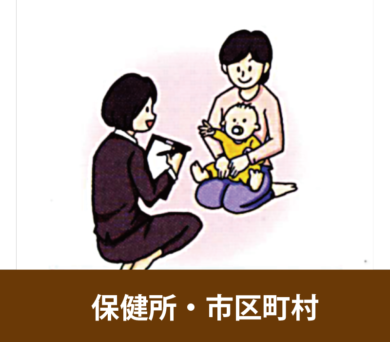
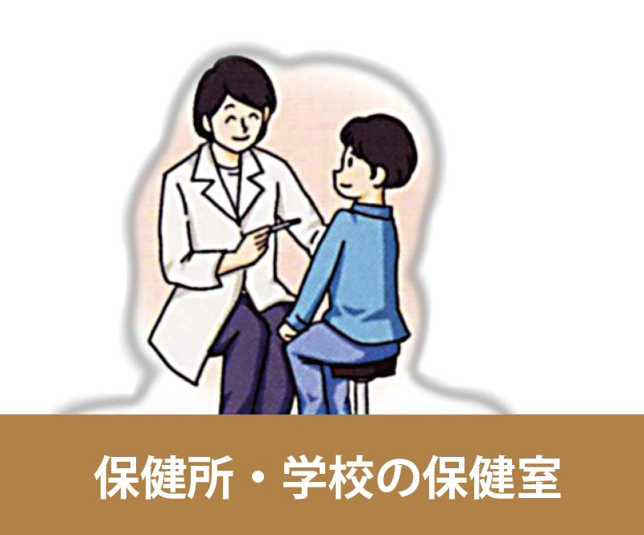
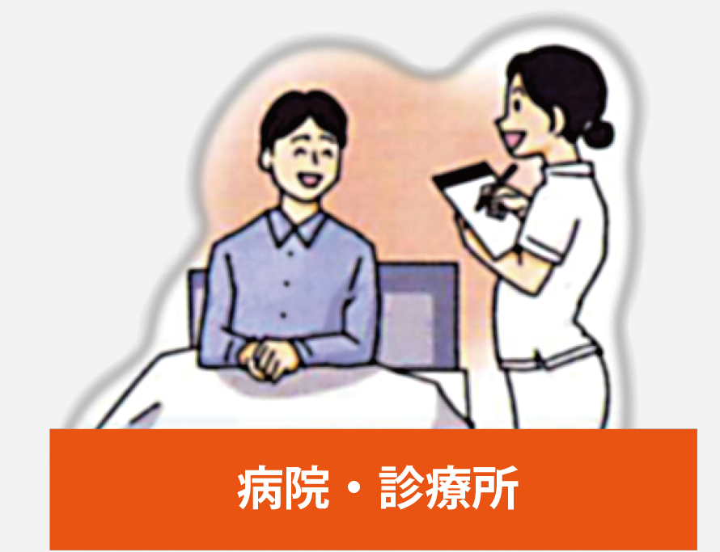

保健師とは
保健師は、病気やケガの予防を主な役割とする専門職で、公衆衛生の向上に貢献する国家資格です。
病気になってしまった人を治療・ケアする看護師とは、その活動の対象と目的が大きく異なります。
1. 保健師の仕事内容と役割
保健師の仕事は、特定の個人だけでなく、地域社会や企業の集団全体を対象として、健康的な生活を支援することです。具体的な仕事内容は多岐にわたります。
•保健指導: 健康診断の結果に基づいて、生活習慣病の予防や改善に向けたアドバイスを行います。
•健康相談: 乳幼児から高齢者まで、幅広い年代の人々からの健康に関する悩みに応じ、助言や支援を行います。
•家庭訪問: 妊産婦や乳児、高齢者など、個別の支援が必要な家庭を訪問し、健康状態の確認や生活指導を行います。
•健康教育・啓発活動: 地域住民向けの健康教室や講演会を企画・運営し、病気予防に関する知識を広めます。
•感染症対策: 新型コロナウイルスのような感染症の予防対策や、感染者・濃厚接触者への対応を担います。
2. 保健師の種類
保健師は、働く場所によって以下のように分類されます。
•行政保健師: 保健所や市町村の保健センターなどに勤務する公務員です。地域住民の健康増進や感染症対策など、地域全体の公衆衛生に携わります。
•産業保健師: 一般企業に勤務し、従業員の健康管理やメンタルヘルス対策、職場環境の改善などを行います。
•学校保健師: 小学校、中学校、大学などの保健室に勤務し、児童・生徒・教職員の健康管理や応急処置、健康相談などを行います。
•病院保健師: 病院の健診センターなどに勤務し、人間ドックの受診者への保健指導や、病院内で働く職員の健康管理を担います。
3. 資格取得までの道のり
保健師になるには、以下の2つの国家資格が必要です。
1.看護師免許
2.保健師免許
保健師国家試験の受験資格は、看護師の資格をすでに取得している、もしくは取得見込みであることが前提となります。
主な取得ルートは以下の2つです。
•4年制大学: 保健師養成課程を設置している大学に進学し、看護師と保健師のカリキュラムを同時に履修します。卒業時に両方の国家試験の受験資格が得られ、最短4年で両方の資格取得を目指せます。
•看護師養成学校＋保健師養成学校: 看護師養成学校（3年制）を卒業して看護師免許を取得した後、保健師養成学校（1年以上）に進学して学びます。
保健師国家試験の合格率は例年90%前後と高い水準ですが、これは受験者が看護師の知識と技術を身につけた上で、さらに専門的な教育を受けているためです。看護師とは異なる役割を担うため、「治療」ではなく「予防」に関心がある人に向いている仕事と言えます。
保健師の活動の場
保健師は、主に病気の予防と健康増進を目的として、様々な場所で活動します。その活動場所によって、役割や仕事内容が異なります。
1. 行政機関

保健師が最も多く活躍する場です。公務員として、地域住民全体の健康を支える役割を担います。
•保健所: 都道府県や指定都市などが設置する機関で、感染症対策、精神保健福祉、難病対策など、より専門的で広域な保健サービスを提供します。
•保健センター: 市区町村が設置する機関で、乳幼児健診、子育て支援、生活習慣病予防教室など、地域住民に身近な保健サービスを提供します。
2. 一般企業
「産業保健師」として、企業で働く人々の健康を守る役割を担います。
•主な仕事: 従業員の健康診断の実施と結果管理、メンタルヘルスケア、ストレスチェック、健康相談、職場環境の衛生管理などを行います。
3. 学校

「学校保健師」または「養護教諭」として、児童・生徒の健康管理を行います。
•主な仕事: 児童・生徒の健康診断、ケガや病気の応急処置、健康相談、保健指導、感染症対策などを行います。養護教諭として働くには、養護教諭免許が必要です。
4. 病院・診療所
